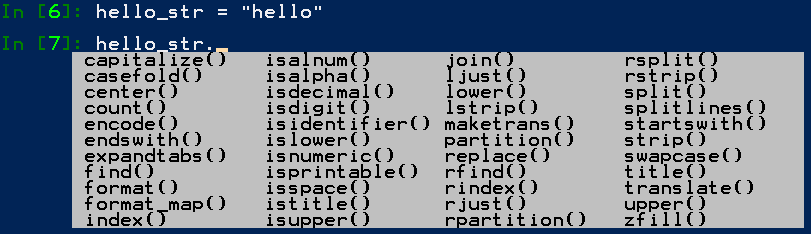
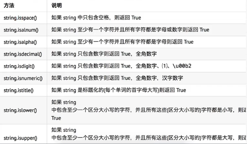
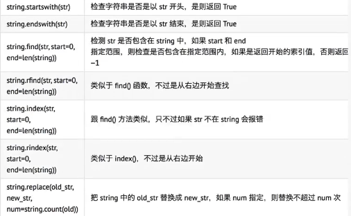
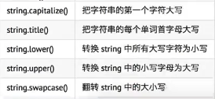
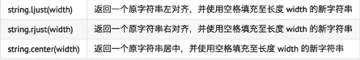
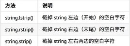
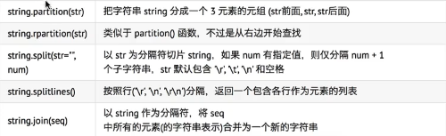

可以使用""双引号，也可以使用''单引号定义字符串，一般使用双引号定义。

判断类型：

查找和替换

大小写切换：

文本对齐

注：string.center(weight,str) 以str填充对齐，其他两个方法类似，都可以拓展。
去除空白字符

拆分和链接

定义
字符串[开始索引:结束索引:步长] 包括前面不包括后面
1 str1 = "Hello,World"
2 # 截取索引2-5的字符
3 print(str1[2:6]) # llo,
4 # 从索引2开始，截取到最后
5 print(str1[2:]) # llo,World
6 # 从0开始截取到索引5
7 print(str1[:6]) # Hello,
8 # 从0开始截取到最后
9 print(str1[:]) # Hello,World
10 # 从零开始，步长为2，截取到最后（每两个截取一个）
11 print(str1[::2]) # HloWrd
12 # 从索引1开始，步长为2，截取到最后（从索引1开始，每隔一个取一个）
13 print(str1[1::2]) # el,ol
14 # 截取索引为-1的，截取最后一个字符
15 print(str1[-1]) # d
16 # 从索引2开始截取到倒数第二个（不包括倒数第一个）
17 print(str1[2:-1]) # llo,Worl
18 # 从倒数第二个开始，截取到最后
19 print(str1[-2:]) # ld
20
21 # 从最后一个开始，步长为-1（使用字符串切片，让字符串逆序）
22 print(str1[-1::-1])